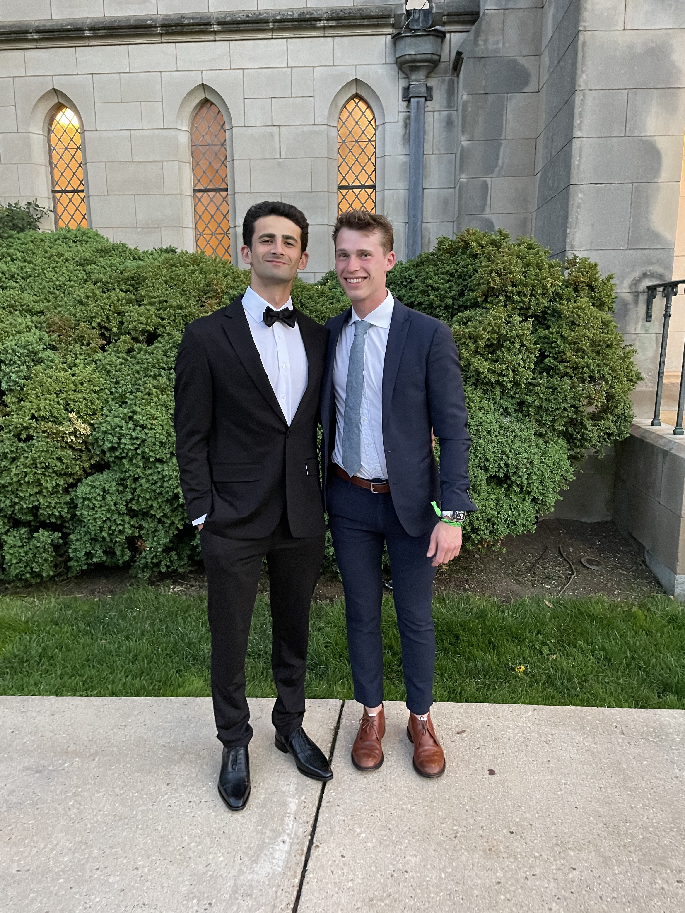

flowchart LR A(Horace Mann School) --> B(Georgetown University) B --> C(The Real World)
About Me

Ben Doolan
Ben Doolan is a senior at Georgetown University, majoring in Physics and Classics, while pursuing a Master of Science in Data Science & Analytics through Georgetown’s accelerated DSAN program. This summer, Ben worked at EY-Parthenon, a management consulting firm, out of their San Francisco office. There, he worked with a large private equity client, helping restructure a portfolio company’s IT spend as part of a technology transformation. The prior two summers, Ben worked as a data intern at L Catterton, a consumer focused private equity firm. In the future, Ben hopes to explore the intersection of physics, statistics, medicine, biology, and computer science in their application to the life sciences. In particular, he’d to examine how statistical and machine learning techniques can be applied to improve the predictive capabilities of Continuous Glucose Monitors for Type 1 Diabetes management. In his free time, Ben enjoy reading, visiting museums, and discussing politics and current affairs.
Education
| School | Degree | Years |
|---|---|---|
| Georgetown University | M.S., Data Science & Analytics | 2023-2025 |
| Georgetown University | B.A., Physics & Classics | 2020-2024 |
Interests
- Academic
- Physics
- Electromagnetism
- Electrical Engineering
- Sensors & Digital Electronics
- Medical Technology
- Continous Glucose Monitors
- Insulin Pumps
- Consumer Biowearables
- History of the Late Roman Republic
- Marcus Porcius Cato Uticensis
- Marcus Tulius Cicero
- Gaius Julius Caesar
- Lucius Cornelius Sulla
- Gaius Marius
- Physics
- Extracurricular
- Government
- US Politics
- International Affairs
- Science & Technology Policy
- Defense & National Security
- Wellness
- Running
- Cycling
- Rowing
- Cultural
- Classical Art & Architecture
- Renaissance Art & Architecture
- Farmers’ Markets
- Government
Video Library
Continuous Glucose Monitors
Here are some good informational videos about continuous glucose monitoring systems, which have revolutionized diabetes care & management and are beginning to be used in commerical, non-clinical context.
Guiding Quotes
There are, on the other hand, two kinds of injustice — the one, on the part of those who inflict wrong, the other on the part of those who, when they can, do not shield from wrong those upon whom it is being inflicted.1
True law is right reason in agreement with nature; it is of universal application, unchanging and everlasting; it summons to duty by its commands, and averts from wrongdoing by its prohibitions. And it does not lay its commands or prohibitions upon good men in vain, though neither have any effect on the wicked.2
History, in truth, bears witness to time, is the illuminator of reality, the vitality of remembrance, the guide of life, the messenger of bygone days.3
The cause and principle of all Cato’s actions, as well as of his consistency in those actions, was a strong bent to uphold righteousness by any and every means, and a vehement and ardent passion for distinction, not for his own sake, but for the sake of the city, 4